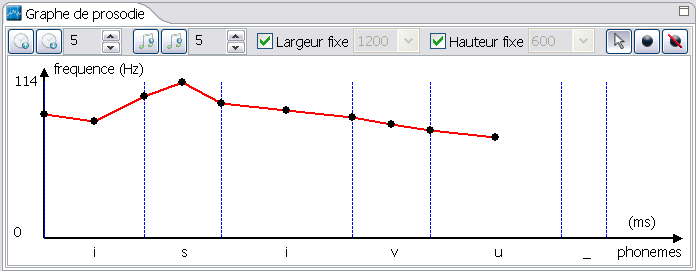

Vous pouvez sélectionner un ou plusieurs phonèmes en cliquant dessus après avoir choisi l'outil de sélection
Vous pouvez appliquer une modification de fréquence sur tous les phonèmes ou sur une sélection de phonèmes en utilisant la barre d'outil de fréquence
Vous pouvez également appliquer une modification de longueur sur tous les phonèmes ou sur une sélection de phonèmes en utilisant la barre d'outil de longueur
Enfin vous pouvez modifier la taille du graphe en cochant/décochant la largeur fixe  et en cochant/décochant la hauteur fixe
et en cochant/décochant la hauteur fixe